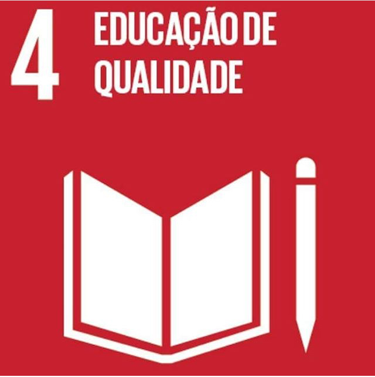
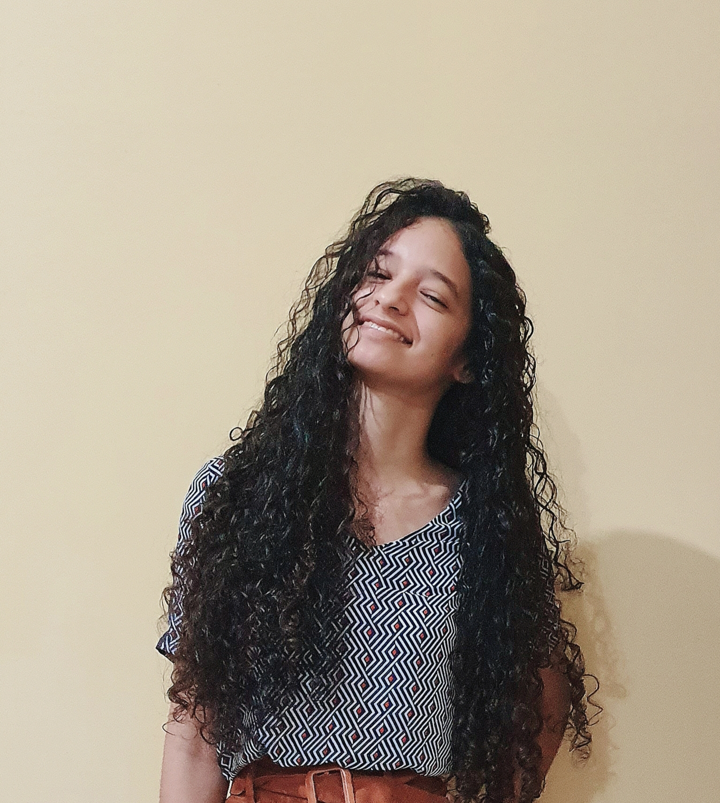

Quem somos
Conheça o E-Cosystem e quem está por trás do projeto
O que é o E-Cosystem?
O descarte inadequado de equipamentos eletrônicos é um problema ambiental que cresce junto com o avanço da tecnologia e o aumento do consumo de dispositivos eletrônicos. Celulares, computadores, televisores e outros aparelhos, quando deixam de ser utilizados, precisam receber uma destinação adequada para evitar danos ao meio ambiente e à saúde humana.
O E-Cosystem nasceu com o propósito de tornar o acesso a essas informações mais simples e aproximar a população de práticas mais conscientes. Por meio de uma plataforma informativa, o projeto reúne orientações sobre o lixo eletrônico, seus impactos ambientais, as formas corretas de descarte e os locais de coleta disponíveis no município de Açailândia – MA.
Mais do que apresentar informações, a proposta é incentivar pequenas mudanças de hábitos e contribuir para que a tecnologia e a sustentabilidade caminhem juntas.

Sobre o projeto
O E-Cosystem é um projeto de extensão universitária desenvolvido no âmbito do curso de Engenharia de Software da UNINTER, como parte da disciplina Atividade Extensionista II: Tecnologia Aplicada à Inclusão Digital – Projeto.
A iniciativa surgiu da necessidade de ampliar o acesso à informação sobre o descarte adequado de resíduos eletrônicos, considerando os impactos ambientais associados ao manejo incorreto desses materiais.
Com foco na comunidade de Açailândia–MA, o projeto utiliza a tecnologia como ferramenta de educação e conscientização ambiental, reunindo informações educativas, orientações sobre descarte e a localização de pontos de coleta disponíveis no município.
Informar e conscientizar
Apresentar informações sobre o lixo eletrônico e seus impactos ambientais, incentivando práticas de consumo e descarte mais conscientes.
Orientar sobre o descarte
Disponibilizar orientações que auxiliem a população a realizar o descarte correto de equipamentos eletrônicos e seus componentes.
Facilitar o acesso à coleta
Reunir informações sobre os pontos de coleta disponíveis em Açailândia–MA, facilitando sua localização pela comunidade.
Contribuição para um futuro sustentável
O E-Cosystem também está alinhado a princípios da Agenda 2030 da Organização das Nações Unidas (ONU), especialmente aos Objetivos de Desenvolvimento Sustentável 4 e 12. Por meio da educação ambiental e da divulgação de práticas responsáveis, o projeto busca contribuir para uma relação mais consciente entre sociedade, tecnologia e meio ambiente.

Educação de Qualidade
Ampliar o acesso à informação sobre o lixo eletrônico, promovendo conhecimento e conscientização ambiental na comunidade.

Consumo e Produção Responsáveis
Incentivar hábitos de consumo mais conscientes e orientar sobre o descarte adequado de resíduos eletrônicos.
Responsável pelo projeto

Eliana da Silva Nascimento
Engenharia de Software — UNINTERO E-Cosystem foi idealizado e desenvolvido individualmente por Eliana da Silva Nascimento, estudante do curso de Engenharia de Software da UNINTER.
A iniciativa integra as atividades de extensão universitária e representa a aplicação dos conhecimentos adquiridos ao longo da formação acadêmica na construção de uma solução tecnológica voltada à educação e à conscientização ambiental.